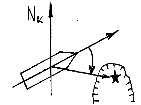

| 21. Този ъгъл наричаме:  |
|
ИК (истински курс) ИП (истински пеленг) КЪ (курсови ъгъл) МП (магнитен пеленг) |
| 22. Курсови ъгъл (КЪ) наричаме: |
|
ъгъл, заключен между северната част към меридиана и посоката на даден предмет ъгъл, заключен между диаметралната равнина на кораба и посоката към даден предмет ъгъл, заключен между северната част на меридиана и магнитния полюс разликата между два пеленга |
| 23. Истинския курс (ИК) се измерва в градуси от: |
|
от 0° до 90° на север или на юг от 0° до 180° към ляв или десен борд от - 180° до + 180° от 0° до 360° |
| 24. Върху пътевата морска карта нанасяме/снемаме стойността на: |
|
истинския курс магнитиня курс компасния курс нито един от предходните |
| 25. Курсовият ъгъл се измерва: |
|
от 0° до 180° към ляв или към десен борд от 0° до 360° от 0° до 90° към ляв или към десен борд от 0° до 90° преди и след траверза |
| 26. Курсове и пеленги се чертаят на морската карта с помощта на: |
|
двубодов пергел навигационен триъгълник или транспортир протрактор водолиния |
| 27. Истинският пеленг (ИП) е равен на: |
|
ИП = ИК + КЪ д/б или ИП = ИК - КЪ л/б ИП = КП - К ИП = КК + КЪ д/б или ИП = КК - КЪ л/б ИП = ОКП ± КЪ |
| 28. Корабният магнитен компас служи за: |
|
определяне на проплаваното разстояние и скоростта на кораба определяне на дълбочината определяне курса на кораба и измерване на пеленги определяне на поправката на жирокомпаса |
| 29. Основен навигационен прибор на кораба (задължителен за всички кораби) е: |
|
радиолокационна станция магнитен компас лот и ехолот указател за скоростта на завиване |
| 30. Стрелката на магнитния компас застава в направлението: |
|
определено от посоката на движение на кораба север-юг изток-запад по диаметралната равнина на кораба |